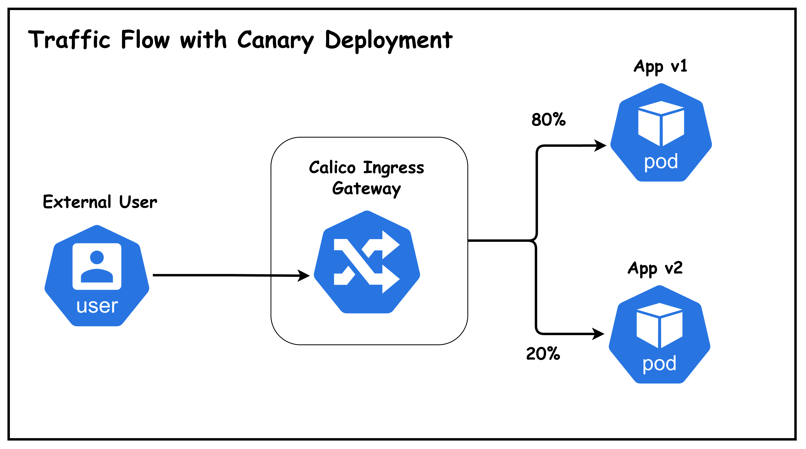
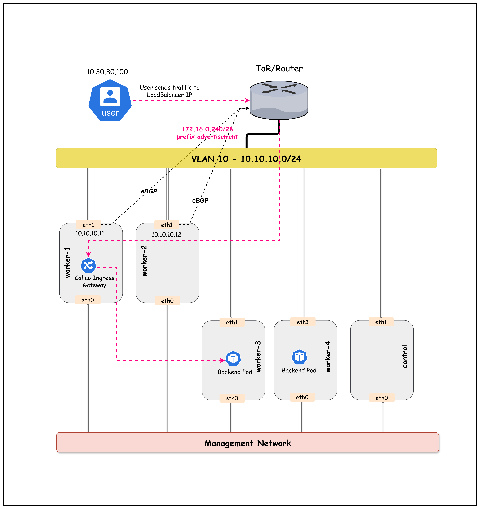

10.30.30.100Lesson 19 · Gateway API · Envoy · BGP · Canary
Calico Ingress Gateway
BGP 入口与金丝雀发布
外部流量先通过 BGP 到达 Gateway 节点，再由 Envoy 按 HTTPRoute 权重分配给稳定版与金丝雀版本。
172.16.0.241ECMPHost: app.demo.lab80 / 20
HTTP
172.16.0.241:8080%
20%
ToR 用 BGP 找入口，Envoy 用 HTTPRoute 选后端
Specification and implementation
Calico Ingress Gateway 把 Gateway API 落成 Envoy 数据面
Gateway API
定义 GatewayClass、Gateway、HTTPRoute、ReferenceGrant 等标准资源。
声明意图controller translates
Envoy Gateway
监听资源变化，生成代理配置并管理 Gateway 数据面。
协调配置programs
Envoy Proxy
监听外部端口，匹配 HTTP 请求并把流量送到后端。
处理请求Calico 的角色：Tigera Operator 管理 Gateway API 能力与 hardened Envoy Gateway 组件，并与 Calico IPAM、BGP 网络整合。
02
Role-oriented model
Gateway API 把基础设施入口与应用路由分开管理
| 角色 | 主要资源 | 本课配置 | 负责内容 |
|---|---|---|---|
| 平台团队 | GatewayAPI / GatewayClass | tigera-gateway-class | 控制器、镜像、部署约束 |
| 网络团队 | Gateway | HTTP :80 | 入口、listener、允许附加的 Route |
| 应用团队 | HTTPRoute | app.demo.lab / | 匹配条件、后端与权重 |
| 目标命名空间所有者 | ReferenceGrant | default → demo Services | 授权跨命名空间引用 |
与传统 Ingress 相比，Gateway API 用类型化字段表达 listener、route 和 backend，减少厂商注解承担的核心语义。
03
Progressive delivery
金丝雀发布让少量真实流量先验证新版本

04
Course topology
原课件拓扑：两个 BGP 入口节点与两个工作负载节点

bgp-peer=true 的节点；后端运行在 worker3/worker4。05
Exact lab addressing
五个 Kubernetes 节点全部在 VLAN 10，外部用户单独位于 VLAN 30
cEOSAS 65001
Vlan10 + Vlan3006
End-to-end layers
一条请求依次经过外部路由、Gateway Service、Envoy 与后端 Service
User route
172.16.0.241 via 10.30.30.1ToR BGP / ECMP
via .11 or .12LoadBalancer Service
external IP :80Envoy
Host + Path + weightBackend Service
app-v1 / app-v2两个负载均衡层：ToR 的 ECMP 选择入口 Node；Envoy 的 weighted backend 选择应用版本。两者解决的问题不同。
07
containerlab/19-calico-ingress
实验把基础设施、入口和应用路由拆成独立清单
cEOS、五节点 Kind、外部 user 和链路。
IPPool 与 VXLANCrossSubnet。
AS、LB CIDR 与选择性 ToR 邻居。
启用 Gateway API 并约束代理节点。
Deployment、Service 与静态页面。
由学员手动创建。
08
What automation stops before
deploy.sh 搭好能力与后端，入口路由由学员手动创建
Containerlab + Kind
Calico 3.31.3 + API server
BGPConfiguration + BGPPeer
LoadBalancer IPPool
GatewayAPI + GatewayClass
app-v1 / app-v2
STOP
Gateway
ReferenceGrant
HTTPRoute
外部 curl 与权重变更
$ cd containerlab/19-calico-ingress $ chmod +x deploy.sh $ ./deploy.sh $ export KUBECONFIG=$(pwd)/k01.kubeconfig
09
Baseline
五个 Node IP 与课程拓扑一致
$ kubectl get nodes -o wide
NAME STATUS ROLES INTERNAL-IP
k01-control-plane Ready control-plane 10.10.10.10
k01-worker Ready <none> 10.10.10.11
k01-worker2 Ready <none> 10.10.10.12
k01-worker3 Ready <none> 10.10.10.13
k01-worker4 Ready <none> 10.10.10.14
课程输出会因环境变化。后续 Gateway IP、Pod IP、Service ClusterIP 和 NodePort 都应用 JSONPath 或实时命令获取。
10
Selective peering
只有 worker 与 worker2 带 bgp-peer=true
bgp-peer=truebgp-peer=trueno labelno label$ kubectl get nodes -l bgp-peer=true
NAME STATUS ROLES
k01-worker Ready <none>
k01-worker2 Ready <none>
11
Global BGP policy
BGPConfiguration 宣告整个 LoadBalancer 地址池
apiVersion: projectcalico.org/v3 kind: BGPConfiguration metadata: name: default spec: asNumber: 65010 nodeToNodeMeshEnabled: false serviceLoadBalancerIPs: - cidr: 172.16.0.240/28
Calico 节点对 ToR 的本地 AS。
不建立全节点 iBGP full mesh。
允许通过 BGP 宣告的 LoadBalancer 地址范围。
12
Peer only from selected nodes
BGPPeer 的 nodeSelector 把 ToR 邻居限制在两个入口节点
apiVersion: projectcalico.org/v3 kind: BGPPeer metadata: name: bgppeer-arista spec: peerIP: 10.10.10.1 asNumber: 65001 nodeSelector: bgp-peer == "true"
eBGP
eBGP
13
Address allocation
专用 IPPool 只给 LoadBalancer Service 分配地址
apiVersion: projectcalico.org/v3 kind: IPPool metadata: name: loadbalancer-ip-pool spec: cidr: 172.16.0.240/28 blockSize: 28 assignmentMode: Automatic allowedUses: - LoadBalancer
172.16.0.240/28
.240.241.242.243....255
Gateway Service gets .241这段不会作为普通 workload 或 tunnel pool 使用。
分工：IPPool 分配 Service 地址；BGPConfiguration 决定哪些 LoadBalancer CIDR 对外发布。
14
Operator integration
GatewayAPI CR 创建 GatewayClass 与 Envoy Gateway 组件
apiVersion: operator.tigera.io/v1 kind: GatewayAPI metadata: name: default spec: gatewayClasses: - name: tigera-gateway-class gatewayDeployment: spec.template.spec.nodeSelector: bgp-peer: "true"
15
Eligibility is not replica topology
nodeSelector 约束候选节点，不保证两个节点各运行一个 Envoy
bgp-peer=truebgp-peer=truescheduler chooses based on replicas and availability
on worker已保证
Envoy 不会调度到 worker3/worker4。
尚未保证
每个 BGP speaker 都有本地 Envoy，或副本跨两个节点分散。
16
Capability is ready
tigera-gateway-class 被 Envoy Gateway controller 接受
$ kubectl get gatewayapi NAME AGE default 5m $ kubectl get gatewayclass NAME CONTROLLER ACCEPTED tigera-gateway-class gateway.envoyproxy.io/gatewayclass-controller True
Accepted=True 表示 controller 接受这个 class。此时尚未创建任何 Gateway，也不会有课程的入口地址。
17
Backends are separate from ingress nodes
稳定版两个副本，金丝雀版一个副本，都落在非 BGP 节点
version=v1version=v2required affinity excludes
bgp-peer and control-plane
bgp-peer and control-plane
bgp-peer=true$ kubectl get pods -n ingress-gateway-demo -o wide
18
Weighted backends are Services
app-v1 与 app-v2 是两个独立 ClusterIP Service
selector version=v1Pod v1Pod v1
selector version=v2Pod v2
$ kubectl get svc -n ingress-gateway-demo
NAME TYPE CLUSTER-IP PORT(S)
app-v1 ClusterIP 10.96.x.x 80/TCP
app-v2 ClusterIP 10.96.x.x 80/TCP
权重层级：HTTPRoute 在两个 Service 之间按 80/20 选择；Service 再在自己版本的 Pod endpoints 之间负载均衡。
19
Three resources to create
Gateway、ReferenceGrant 与 HTTPRoute 构成完整入口关系
Gateway
创建 HTTP listener、Envoy data plane 与 LoadBalancer Service。
default namespaceReferenceGrant
允许 default 的 HTTPRoute 引用 demo namespace 的 Service。
target namespaceHTTPRoute
匹配 app.demo.lab 和 /，配置 v1/v2 权重。
default namespace创建顺序建议：Gateway → ReferenceGrant → HTTPRoute。即使顺序变化，最终也要检查 Route 的 Accepted 与 ResolvedRefs conditions。
20
gateway.yaml
Gateway 创建一个接受所有 Host 的 HTTP 80 listener
apiVersion: gateway.networking.k8s.io/v1 kind: Gateway metadata: name: calico-ingress-gateway namespace: default spec: gatewayClassName: tigera-gateway-class listeners: - name: http protocol: HTTP port: 80 allowedRoutes.namespaces.from: All
listener 本身接受所有 Host。
允许其他 namespace 的 Route 附加。
21
Create the entry point
Gateway Programmed 后获得 172.16.0.241
$ kubectl apply -f k8s-manifests/gateway.yaml gateway.gateway.networking.k8s.io/calico-ingress-gateway created $ kubectl get gateway NAME CLASS ADDRESS PROGRAMMED calico-ingress-gateway tigera-gateway-class 172.16.0.241 True
22
One resource, several runtime objects
Gateway 同时触发代理 Pod 与 LoadBalancer Service
calico-ingress-gatewaydata plane172.16.0.241controller课程运行时对象位于 tigera-gateway 与 calico-system。命名空间和对象名可能随 Calico/Envoy Gateway 版本变化，以 label 和 owner reference 为准。
23
External address allocation
Gateway Service 的 External IP 来自 Calico LoadBalancer IPPool
$ kubectl get svc -n tigera-gateway NAME TYPE CLUSTER-IP EXTERNAL-IP PORT(S) envoy-default-calico-ingress-gateway-xxxx LoadBalancer 10.96.x.x 172.16.0.241 80:3xxxx/TCP $ GATEWAY_IP=$(kubectl get svc -n tigera-gateway \ -o jsonpath='{.items[0].status.loadBalancer.ingress[0].ip}') $ echo $GATEWAY_IP 172.16.0.241
不要依赖 items[0]：课程只有一个 Gateway Service。多 Gateway 环境应按 label 或明确 Service 名过滤，避免取到错误地址。
24
Target namespace controls access
跨命名空间 backendRef 默认需要目标方授权
wants app-v1/app-v2DENY BY DEFAULTcross-namespace reference
target owner decidesReferenceGrant 必须创建在被引用资源所在的目标 namespace。来源 namespace 不能自行授予访问权。
25
reference-grant.yaml
ReferenceGrant 允许 default 的 HTTPRoute 引用本命名空间 Service
apiVersion: gateway.networking.k8s.io/v1beta1 kind: ReferenceGrant metadata: name: allow-gateway-to-demo namespace: ingress-gateway-demo spec: from: - group: gateway.networking.k8s.io kind: HTTPRoute namespace: default to: - group: "" kind: Service
from defaultcore API groupingress-gateway-demo$ kubectl apply -f k8s-manifests/reference-grant.yaml
26
httproute.yaml
HTTPRoute 匹配 Host 与路径，并给两个 Service 设置权重
kind: HTTPRoute metadata: name: canary-traffic-split namespace: default spec: hostnames: ["app.demo.lab"] parentRefs: - name: calico-ingress-gateway rules: - matches: - path: {type: PathPrefix, value: /} backendRefs: - name: app-v1 namespace: ingress-gateway-demo port: 80 weight: 80 - name: app-v2 namespace: ingress-gateway-demo port: 80 weight: 20
27
Precise ownership of hostname
app.demo.lab 由 HTTPRoute 匹配，不在 Gateway listener 上
接受任何 Host，再交给附加 Route。
Host: app.demo.lab只有匹配的请求进入 backendRefs。
带正确 Host
HTTPRoute 匹配，返回 v1 或 v2。
缺少或错误 Host
没有 Route 匹配，Envoy 通常返回 404。
28
Course relationship diagram
原课件关系图：Route 连接 Gateway 与跨命名空间 Service

29
Configuration resolution
控制面按附加、授权、解析三个步骤确认 Route
allowedRoutes=AllparentRefs
80 / 20grant check
default → ServicebackendRefs
port 80这是控制面关系动画。数据面请求到达 Envoy 后，直接按已经下发的配置访问后端，不会逐请求查询这些 Kubernetes 对象。
30
Status is the first diagnostic
Accepted、Programmed 与 ResolvedRefs 分别验证不同环节
GatewayClass/controller 接受对象。
listener 与数据面已配置。
Route 成功附加到 parent。
Service、namespace、port 与 Grant 都能解析。
$ kubectl describe gateway calico-ingress-gateway $ kubectl describe httproute canary-traffic-split
31
Control-plane reachability
ToR 与两个 speaker 建立 eBGP 会话
$ docker exec -it clab-calico-ingress-ceos01 Cli ceos> enable ceos# show ip bgp summary Neighbor AS State PfxRcd 10.10.10.11 65010 Estab 1 10.10.10.12 65010 Estab 1
先有会话，再看路由：邻居 Established 只证明 BGP 通道正常；是否学到 LB CIDR 还要执行
show ip route。32
ECMP route
ToR 通过两个下一跳学习 172.16.0.240/28
ceos# show ip route B E 172.16.0.240/28 [200/0] via 10.10.10.11, Vlan10 via 10.10.10.12, Vlan10
课程宣告的是整个 /28，不是只宣告单个 172.16.0.241/32。ToR 对这个 pool 内地址使用相同下一跳集合。
33
Layer 3 distribution
ToR 按 flow hash 在两个入口节点间选择路径
ECMP hashFLOW A
FLOW B
BGP speakerBGP speaker同一 TCP flow：通常保持在同一路径。ECMP 不是把单个 HTTP 请求拆成两半，而是在多条连接之间分布。
34
VLAN 30 client
用户主机通过 10.30.30.1 路由到 LoadBalancer 网段
$ docker exec clab-calico-ingress-user ip addr show eth1 inet 10.30.30.100/24 scope global eth1 $ docker exec clab-calico-ingress-user ip route 10.30.30.0/24 dev eth1 src 10.30.30.100 172.16.0.0/16 via 10.30.30.1 dev eth1
35
Data plane
外部请求经过 ToR、入口 Node、Envoy 与后端 Pod
Host app.demo.labHTTP
172.16.0.241NODE
route + weight80/20
worker3 / worker4如果 ECMP 选中的 Node 没有本地 Envoy endpoint，Service 数据面仍可能转发到另一 Node。课程默认 externalTrafficPolicy 与副本分布需要实际检查。
36
Reachable gateway, unmatched request
缺少 Host header 时，请求到达 Envoy 但没有 Route 匹配
GET / HTTP/1.1
Host: app.demo.labMATCHHTTPRoute 选择 backend。
GET / HTTP/1.1
Host: 172.16.0.241NO MATCHEnvoy 通常返回 404。
$ docker exec clab-calico-ingress-user curl -s http://$GATEWAY_IP 404 / empty response
37
One weighted choice
带 app.demo.lab Host 后，单次请求返回任一版本
$ GATEWAY_IP=$(kubectl get svc -n tigera-gateway \ -o jsonpath='{.items[0].status.loadBalancer.ingress[0].ip}') $ docker exec clab-calico-ingress-user curl -s \ -H "Host: app.demo.lab" http://$GATEWAY_IP | \ grep -o "App Version [12]" App Version 1
单次返回 v1 或 v2 都合理。权重只能通过多次独立请求或连接观察，不能从一次结果判断比例。
38
Weighted routing semantics
80 与 20 是相对权重，不是固定请求编号规则
长期期望约 80%。
长期期望约 20%。
不是：前 80 个请求固定去 v1，后 20 个固定去 v2。
也不是：每 5 个请求必然 4 个 v1、1 个 v2。
应理解为：每次选择按权重参与，样本越大越接近配置比例。
39
Sample the distribution
100 次请求可以快速观察近似 80/20 分布
$ for i in $(seq 100); do docker exec clab-calico-ingress-user curl -s \ -H "Host: app.demo.lab" http://$GATEWAY_IP | \ grep -o "App Version [12]" done | sort | uniq -c 80 App Version 1 20 App Version 2
example 80
example 20
40
Use percentages
更大样本应显示接近而非精确等于配置比例
TOTAL200
$ for i in $(seq 200); do ...; done | awk '
/Version 1/ {v1++} /Version 2/ {v2++}
END { total=v1+v2; printf("v1 %.1f%%, v2 %.1f%%\n", v1/total*100, v2/total*100) }'
工程上还要看：错误率、延迟、业务指标和版本日志。流量比例正确不代表金丝雀版本健康。
41
Increase canary exposure
JSON Patch 把两个 backend 权重改为 50/50
$ kubectl patch httproute canary-traffic-split \ --type='json' -p='[ {"op":"replace","path":"/spec/rules/0/backendRefs/0/weight","value":50}, {"op":"replace","path":"/spec/rules/0/backendRefs/1/weight","value":50} ]' $ kubectl get httproute canary-traffic-split \ -o jsonpath='{.spec.rules[0].backendRefs}' | jq
42
Canary at half traffic
更新后新请求近似平均分配给两个版本
new config50%
50%
52 App Version 1
48 App Version 2
43
Complete rollout
把 v1 权重设为 0，所有新请求转到 v2
初始验证
扩大样本
完成发布
$ kubectl patch httproute canary-traffic-split --type='json' -p='[
{"op":"replace","path":"/spec/rules/0/backendRefs/0/weight","value":0},
{"op":"replace","path":"/spec/rules/0/backendRefs/1/weight","value":100}
]'
连续 10 次请求都应返回 App Version 2。已有长连接的行为取决于连接复用和协议，测试重点是新请求。
44
Traffic rollback
发现异常时把权重改回 100/0
latency / business KPIPATCH
configuration updateNEW REQUESTS
serves traffic$ kubectl patch httproute canary-traffic-split --type='json' -p='[
{"op":"replace","path":"/spec/rules/0/backendRefs/0/weight","value":100},
{"op":"replace","path":"/spec/rules/0/backendRefs/1/weight","value":0}
]'
45
Controller and proxy
课程输出区分 Envoy Gateway controller 与数据面 proxy
$ kubectl get pods -n tigera-gateway -o wide envoy-default-calico-ingress-gateway-... 2/2 Running k01-worker envoy-gateway-... 1/1 Running k01-worker ...certgen... 0/1 Completed k01-worker3
把 Gateway API 资源翻译成 Envoy 配置。
监听 80 并实际处理外部请求。
完成后状态 Completed 属于正常。
46
Separate route redundancy from proxy redundancy
双 BGP 路径不自动等于双 Envoy 数据面
两条 ECMP 路径
ToR 可选择 worker 或 worker2。
route redundancyLoadBalancer data path
选中节点把流量导向 proxy endpoint。
cluster or local policyEnvoy 副本
课程示例可能只有一个 data plane Pod。
replica redundancy生产检查：Gateway proxy replicas、pod anti-affinity/topology spread、Service
externalTrafficPolicy、每节点 endpoint 与故障切换。47
Policy interaction
全局默认拒绝时，Envoy 需要 DNS、控制器与后端放行规则
允许入口请求到代理 listener。
代理启动和服务解析需要 DNS。
课程对应版本需接收控制器配置。
允许访问 demo namespace 后端。
ReferenceGrant 只授权配置引用，不替代 NetworkPolicy。Route ResolvedRefs=True 时，数据面仍可能被策略阻断。
48
Inspect instead of assuming
源 IP 是否保留取决于 Gateway Service 的 externalTrafficPolicy
| 模式 | 入口 Node 行为 | 后端可见源地址 | 拓扑要求 |
|---|---|---|---|
Cluster | 可转发到任意 proxy endpoint | 可能发生 SNAT | 无需每个入口 Node 有本地 endpoint |
Local | 只使用本地 proxy endpoint | 通常保留客户端源 IP | 每个被宣告入口 Node 应有健康本地 endpoint |
$ kubectl get svc -n tigera-gateway \
-o jsonpath='{range .items[*]}{.metadata.name}{" "}{.spec.externalTrafficPolicy}{"\n"}{end}'
49
Control and data plane evidence
Route 状态、Envoy 日志与版本响应构成三层证据
Gateway / HTTPRoute conditions
Accepted · Programmed · ResolvedRefsEnvoy logs and metrics
route match · response code · upstreamVersion response
App Version 1 / 2$ kubectl logs -n tigera-gateway \
-l gateway.envoyproxy.io/owning-gateway-name=calico-ingress-gateway
50
No ADDRESS / EXTERNAL-IP pending
Gateway 没有地址时，先查 IPAM 再查 controller
Gateway status
describe gatewayAccepted、Programmed 与 events。
LB IPPool
kubectl get ippoolsallowedUses、CIDR、Automatic。
LB controller
get kubecontrollersconfiguration是否为 Service 分配地址。
GatewayClass
get gatewayclassAccepted 与 controllerName。
Proxy Service
get svc -n tigera-gatewaystatus.loadBalancer 是否写入。
Controller logs
logs envoy-gateway配置与资源创建错误。
51
404 / 503 / timeout after connect
能到 Gateway 但后端失败时，重点查 Host、Route、Grant 与 Service
Host 或 path 不匹配。
缺 Grant、Service/port/namespace 错。
Service endpoints、Pod readiness 或策略。
NetworkPolicy、路由或后端监听。
$ kubectl describe httproute canary-traffic-split $ kubectl get referencegrant -n ingress-gateway-demo $ kubectl get endpointslice -n ingress-gateway-demo
52
No TCP connection to LoadBalancer IP
外部完全不可达时，按用户路由、ToR BGP、Node Service 检查
172.16/16 via 10.30.30.1.11/.12 Established172.16.0.240/28 ECMPLB IP :80Envoy listening$ calicoctl node status $ docker exec -it clab-calico-ingress-ceos01 Cli -c "show ip bgp summary" $ docker exec -it clab-calico-ingress-ceos01 Cli -c "show ip route"
53
Live demo runbook
三十分钟演示顺序覆盖入口、路由、发布与回滚
./deploy.sh搭建五节点、ToR、BGP、Gateway API 和应用get nodes -l bgp-peer=true确认两个 speakershow ip bgp summary确认两条 eBGP 会话get gatewayclass确认 tigera class Acceptedget pods/svc -n ingress-gateway-demo确认后端落点apply gateway.yaml等待 Programmed 与 .241apply reference-grant.yaml授权跨 namespace
apply httproute.yaml确认 Accepted/ResolvedRefsshow ip route确认 /28 双 next hopcurl without Host观察 404curl with Host验证单次请求100 requests观察近似 80/20patch 50/50 → 0/100推进发布patch 100/0演示快速回滚
清理：
chmod +x destroy.sh && ./destroy.sh。执行前确认没有需要保留的抓包或日志。54
Summary and sources
Calico Ingress Gateway 的完整证据链
入口能力
GatewayAPI CR 提供 GatewayClass 与 Envoy Gateway。
外部可达
LB IPAM 分配地址，Calico BGP 向 ToR 宣告池。
请求路由
Gateway listener 接收，HTTPRoute 匹配 Host 与后端。
渐进发布
调整 backend weight 扩大、完成或回滚金丝雀。
55